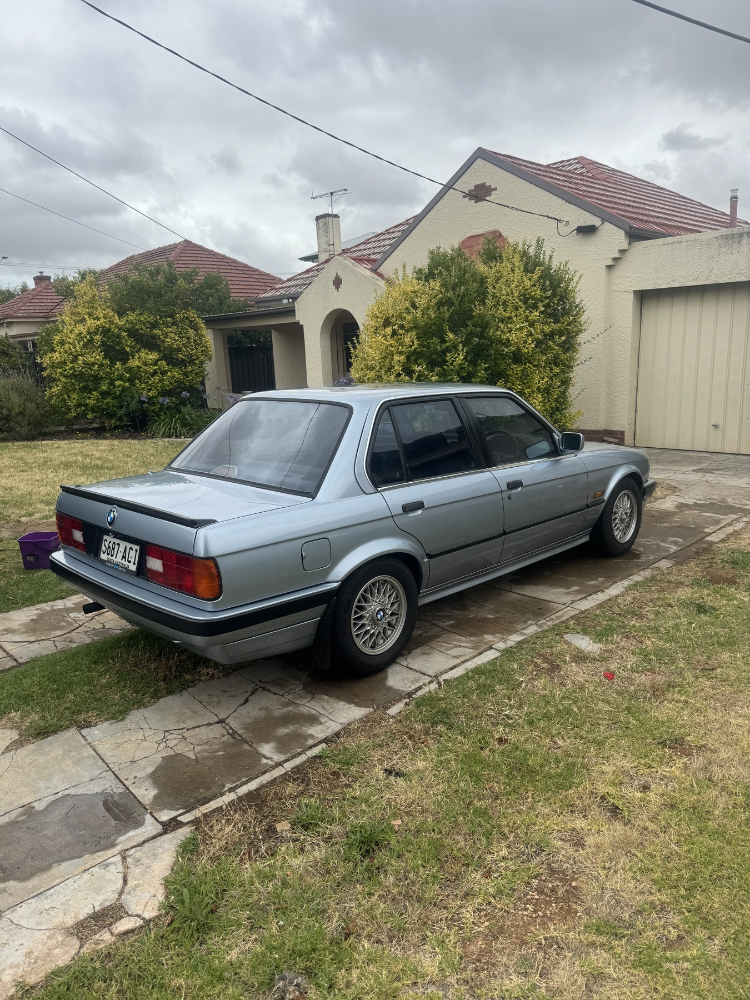
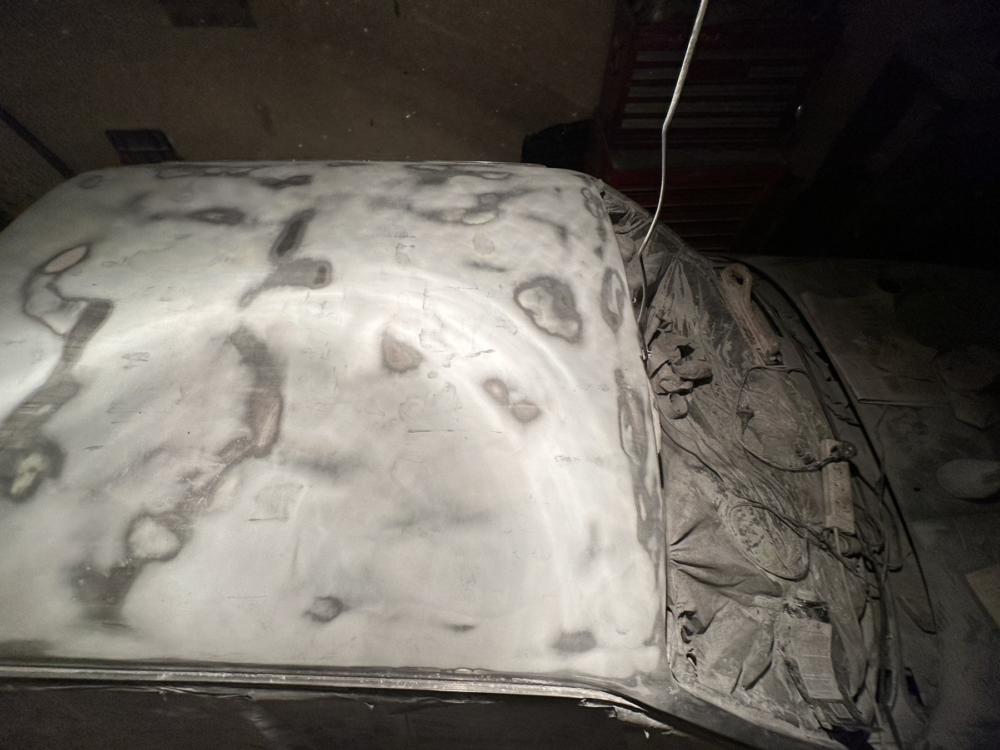

01 / 07
Why I resprayed my E30
Buying it, hail damage and the decision to take it all apart.
Read chapter 0101 / Project journal
From hail-damaged daily
to a full DIY respray.
A seven-part journal documenting the bodywork, rust repair, paint and reassembly of my 1990 BMW E30 318i.

What started as a $4,000 daily driver became a lesson in everything hiding underneath a good paint job.
Written off after Adelaide’s 2021 hailstorm. Almost sold. Then slowly brought back to life through much of 2023 in a cramped West Croydon courtyard. I did the preparation, a painter handled the final spray, and I learned rather more than I’d bargained for.
Explore the chapters
Buying it, hail damage and the decision to take it all apart.
Read chapter 01
Sanding, filler, a very dusty courtyard, and learning when a panel is actually straight.
Read chapter 02
Hidden corrosion, my first welding repairs, and finally getting the body ready for colour.
Read chapter 03
Basecoat, clear, and the day the car finally became Glacier Blue again.
Read chapter 04
Glass, trim, bumpers, badges and a slightly stressful interstate-moving deadline.
Read chapter 05
Orange peel, the correction still to do, and the tools I would choose next time.
Read chapter 06The result, the real cost, and what I would do differently several years later.
Read chapter 07